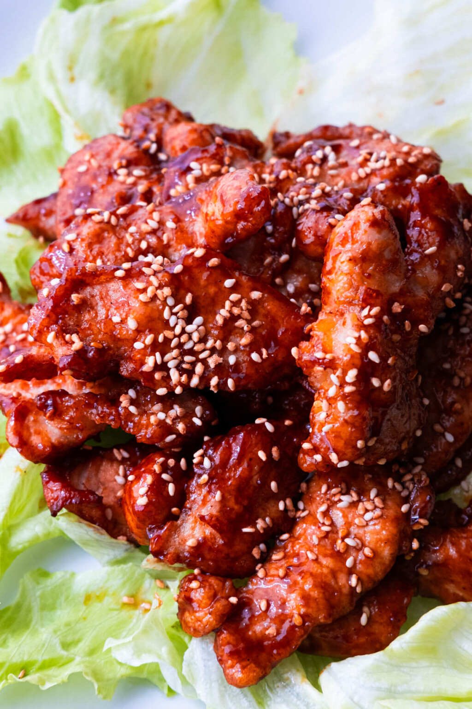

Peking Pork Recipe

This is one of my favourite dish growing up. It has a sweet and tangy note and can be eaten with
rice and/or vegetables. Marinade overnight for a deeper flavour profile. Pork can be deep fried
or pan fried.
Main Ingredients
- 14 oz pork loin (cut into 1/2 inch thick slices)
- 10 oz oilItem 2
- 1 tsp sugar
- 1 tbsp oil
- 1 tsp sesame seed
Marinade ingredients
- 2 tbsp cornstarch
- 1 tbsp oyster sauce
- 1 tbsp cooking wine
- 2 tbsp water
- 1/4 tsp white pepper
- 1/2 tsp salt
Sauce Ingredients
- 5 tbsp Chinese red vinegar
- 1 tbsp rice vinegar
- 4 tbsp ketchup
- 1 tbsp hoisin sauce
- 3 1/2 tbsp sugar
- 2 tbsp water
Steps
- Prep Pork
- Add cornstarch, oyster sauce, cooking wine, water, white peper and salt
- Add pork to above and mix into meat by hand
- Prep sauce & Slurry
- Add Chinese red vinegar, rice vinegar, ketchup, hoisin sauce, sugar and water
- Mix thoroughly to combine
- Taste and adjust sauce if needed
- Fry the Pork
- Pan fry piece by piece, ensure not to overcrowd it
- Fry for roughly 1.5 to 2.0 minutes
- Remove pork and set aside
- Wipe out any leftover fried residue
- Finish the Dish
- Add the sauce to the pan
- Heat to medium, stirring constantly as it comes to a boil
- Lower heat and add slurry while stirring to thicken
- Taste and adjust as needed
- Turn off heat and add pork, ensure each piece is coated in sauce